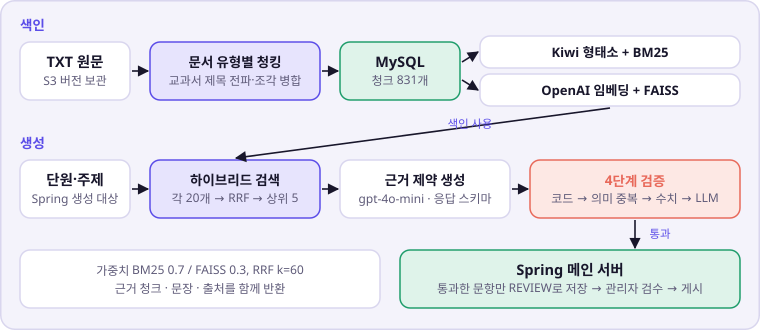
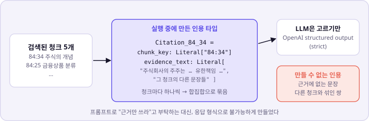

프론트엔드는 AI 서버를 직접 부르지 않습니다. 메인 서버와 내부 API로만 주고받습니다.
AI는 RDS 안의 AI DB만 씁니다. 원문과 FAISS 인덱스 백업은 S3에 둡니다.
밖으로 나가는 호출은 OpenAI(생성·임베딩)와 네이버 뉴스 검색 API입니다.
처리 흐름

키워드 검색(BM25)과 의미 검색(FAISS)에서 각각 20개를 받아 점수가 아닌 순위로 합칩니다(RRF). 두 검색의 점수 단위가 달라 그대로 더할 수 없기 때문입니다. 금융 교과서는 용어가 정확히 일치하는 경우가 많아 BM25 비중을 0.7로 두었습니다.
주요 경험
1. 검색 근거가 제목 조각으로 채워지는 문제 — 청킹에서 원인 찾기
근거 품질 지표 · 문서 유형별 청커 · 재측정
문제
퀴즈 근거로 뽑힌 상위 청크에 "3.2 정기적금" 같은 제목 조각이 섞여, 7개 주제의 근거 35개 중 21개만 퀴즈 근거로 쓸 수 있었습니다.
원인
근거 품질을 지표로 재 보니 전체 청크의 27.8%가 제목·목차 같은 짧은 조각이었습니다. 검색이 아니라 청킹이 병목이었습니다.
해결
교과서 번호형 제목을 청크마다 물려주고, 50자 미만이면서 문장으로 끝나지 않는 조각은 다음 본문과 합쳤습니다. 길이만 보면 짧은 완결 문장까지 합쳐지고, 문장 부호만 보면 긴 본문이 합쳐져 두 조건을 함께 씁니다.
병합 전 (예시)#12 "3.2 정기적금" — 제목만#13 "1) 자유적립식" — 제목만#14 "정기적금은 매월 일정 금액을…"
병합 후"3.2 정기적금 / 1) 자유적립식 / 정기적금은 매월 일정 금액을…" — 제목 계층이 붙은 본문 하나
지표
병합 전
병합 후
전체 청크 수
1,126
831 (−26.4%)
쓸 수 있는 근거 (7개 주제 × 5)
21/35 (60%)
32/35 (91%)
벡터 검색 Hit@5
88.5%
92.3%
하이브리드 MRR@5
0.8942
0.9167
병합으로 줄어든 청크(26.4%)가 진단한 짧은 조각 비율(27.8%)과 거의 같아, 짧은 조각 대부분이 본문과 합쳐졌습니다.
2. 지표가 좋아진 가중치를 채택하지 않은 이유 — 홀드아웃 재검증
평가 세트 설계 · Hit@5 · MRR · 과적합
문제
교과서 용어 그대로 만든 평가 질문은 Hit@5가 이미 100%라 설정끼리 차이가 나지 않았습니다.
판단
같은 정답을 일상어로 바꾼 질문 26개를 새로 만들어 약점이 드러나게 했고, 여기서 두 지표를 모두 올린 후보(BM25 0.8 / FAISS 0.2, RRF k=10)를 찾았습니다. 하지만 그 세트를 보면서 고른 값이라 과적합일 수 있었습니다.
검증
고를 때 한 번도 쓰지 않은 질문 26개를 따로 만들어, 설정을 고정한 채 다시 쟀습니다.
방식
일상어 세트 Hit@5
일상어 MRR@5
홀드아웃 Hit@5
홀드아웃 MRR@5
운영 설정 (0.7 / 0.3)
92.3%
0.8109
84.6% (22/26)
0.6212
후보 (0.8 / 0.2, k=10)
96.2%
0.8782
80.8% (21/26)
0.7000
FAISS 단독
57.7%
0.4019
50.0%
0.4263
후보는 홀드아웃에서 정답을 하나 더 놓쳤습니다(84.6% → 80.8%). 이 서비스에서 검색 실패는 곧 문항 생성 실패라 순위(MRR)보다 찾기(Hit@5)를 우선해 운영 설정을 유지했습니다.
3. 근거에 없는 문장을 인용하는 환각 — 형식으로 막기
OpenAI structured output · 동적 타입 · 단계별 검증
문제
LLM이 근거에 없는 문장을 인용하거나, 다른 청크의 문장을 출처로 붙일 수 있었습니다.
해결
프롬프트로 부탁하는 대신, 검색이 끝난 뒤 그 청크의 키와 실제 문장만 한 쌍으로 고를 수 있는 응답 타입을 실행 중에 만들었습니다. 그 위에 코드 규칙 → 의미 중복 → 금융 수치 → LLM 근거 검증 순서의 4단계 검증을 두었습니다. 비용이 낮은 검사부터 먼저 돌립니다.

자동 검증 통과율이 90%여도 사람이 읽어 보니 큰 수정 없이 쓸 수 있는 문항은 10개 중 2~3개였습니다. 이때 나온 실패(복수 정답, 영어 혼용, 인용이 정답을 뒷받침하지 못함, "N가지" 주장 불일치)를 하나씩 코드 규칙으로 추가했습니다.
출처와 문장이 어긋난 근거는 응답 형식상 나올 수 없게 됐습니다. 자동 통과율은 실제 품질과 다르다는 것도 함께 확인했습니다.
4. 측정 중 발견한 벡터 색인 누락
색인 정합성 검사
문제
기준선을 다시 재는 과정에서 MySQL 청크는 1,126개인데 FAISS 벡터는 1,018개인 것을 발견했습니다. 문서 하나(108개 청크)가 벡터 색인에서 빠져 있었고, 재색인으로 맞춘 뒤 측정했습니다.
해결
같은 누락을 다시 놓치지 않도록 MySQL 청크 수와 FAISS 벡터 수를 비교하는 검사를 넣었습니다. 서버를 시작할 때는 경고를 남기고, 품질 측정에서는 아예 멈춥니다.
실제 생성 결과
2026-08-24 배치에서 자동 검증을 통과한 문항입니다. 정답 근거가 된 청크와 문장이 함께 저장됩니다.
주식회사의 주주는 자신의 출자한 자본액을 초과하여 경제적 책임을 질 수 있는가?
상황에 따라 다르다.
예, 주주는 항상 모든 부채에 대해 책임을 진다.
아니다, 주주는 출자한 자본액의 한도 내에서만 책임을 진다. (정답)
아니다, 주주는 지분의 비율에 따라 책임을 진다.
근거 저축, 금융투자 4장 · 주식의 개념 (청크 84:34) "주식회사의 주주는 출자한 자본액의 한도 내에서만 경제적 책임을 부담하게 되는데, 이를 유한책임(limited liability)이라고 부른다."
형식정답인용근거 일치중복 아님
SINGLE_CHOICE 유형 · gpt-4o-mini · 생성 11.3초
남은 한계
평가 질문이 26개라 1문항이 약 4%입니다. 문항 품질 평가도 10문항을 한 사람이 한 번 본 진단값입니다.
자동 검증을 통과해도 바로 쓸 수 있는 문항은 일부라, 메인 서버에서 사람이 검수한 뒤 게시합니다.
BM25 객체는 서버 메모리에만 있어 시작할 때마다 다시 만듭니다(청크 831개 규모에서는 몇 초).